Configurar a integração: pedidos, dados fiscais e mapeamentos
Pré-requisitos
- A integração Tray já está conectada.
- Naturezas de operação, situações de pedido, formas de recebimento, categorias financeiras, bancos e formas de envio ou frete já cadastrados no ERP, pois as listas usam esses cadastros.
Importante
- Antes de preencher os IDs de status em Outros, solicite o ID de status do pedido à Tray por ticket de atendimento com o parceiro.
- Cada seção tem o próprio botão Salvar. Grave a seção em que você alterou as opções.
Instruções
Configurar o fluxo de pedidos
-
Acesse Início > Integrações e abra a configuração da integração Tray.
-
Clique em Pedidos > Fluxo de Pedidos.
-
Marque ou desmarque Sincronização automática de pedidos.
-
Marque Importar valor do frete nos pedidos para identificar e destacar no pedido de venda o valor do frete.
-
Marque Formatar nome dos contatos no recebimento dos pedidos para formatar o nome com as iniciais maiúsculas em nome e sobrenome ao importar os pedidos.
-
Em Completar endereço do cliente a partir do CEP na importação de pedidos, selecione Não, Apenas se bairro não está informado ou Sempre. O ERP consulta o CEP nos Correios para preencher o endereço.
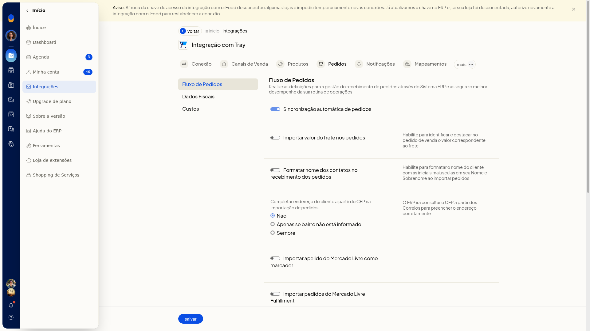
-
Ajuste Importar apelido do Mercado Livre como marcador e Importar pedidos do Mercado Livre Fulfillment.
-
Ajuste Somar o campo Interest nas despesas do pedido, Enviar rastreamento ao alterar a situação no ERP para enviado e Marcar pedido como entregue ao alterar a situação no ERP.
-
Clique em Intermediador e selecione o intermediador. A lista também oferece adicionar intermediador.
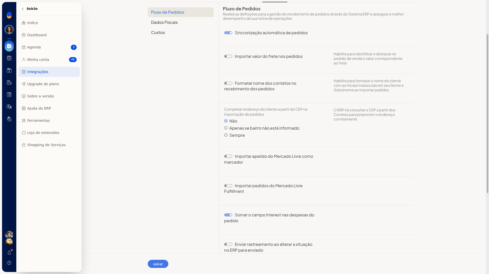
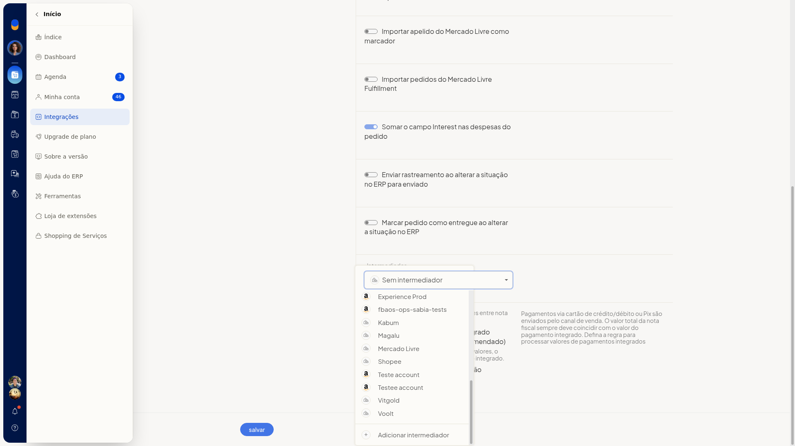
-
Em Defina como processar valores diferentes entre nota fiscal e pagamento integrado, selecione Utilizar valor de pagamento integrado enviado pelo canal de venda (Recomendado) ou Considerar pagamento como 'Não integrado'. Pagamentos via cartão de crédito, débito ou Pix são enviados pelo canal de venda, e o valor total da nota fiscal precisa coincidir com o valor do pagamento integrado. Na opção recomendada, se o ERP identificar divergência nos valores, o pagamento é considerado como não integrado.
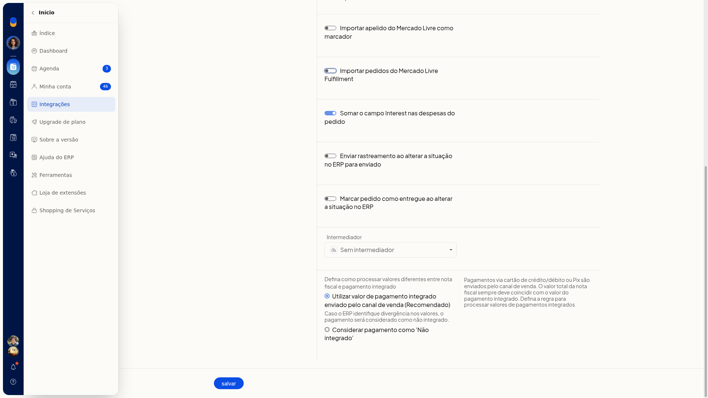
- Clique em Salvar para gravar as regras de recebimento e tratamento dos pedidos.
Configurar os dados fiscais
-
Na integração Tray, clique em Pedidos > Dados Fiscais.
-
Em Envio de dados da NFe, selecione Automático ao autorizar nota fiscal ou Manual.
-
Em Natureza de operação para venda, selecione a natureza padrão dos pedidos importados, entre as naturezas já cadastradas.
-
Marque Definir natureza de operação diferente para destinatários contribuintes do ICMS se quiser outra natureza para esses destinatários.
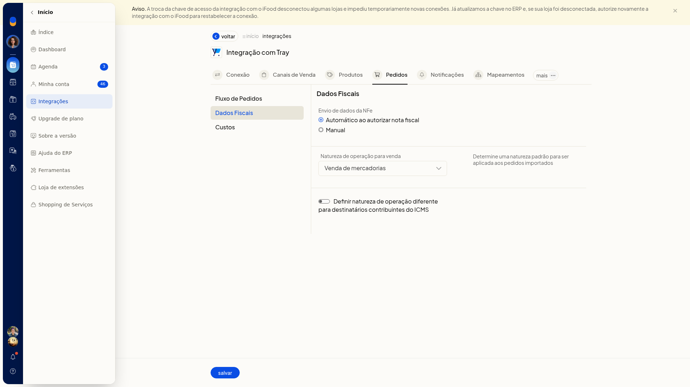
-
Clique em Salvar para gravar o envio dos dados da NFe e a natureza de operação padrão.
Mapear situações de pedidos
-
Na integração Tray, clique em Mapeamentos > Situações de Pedidos.
-
Marque Permite retroceder situação dos pedidos na sincronização de situações se a sincronização puder voltar a situação do pedido.
-
Na tabela, informe o Código da situação no E-commerce e selecione a Situação no Sistema ERP.
-
Clique em adicionar mapeamento de situação para incluir outra linha.
-
Clique em adicionar situações padrão para usar o atalho de situações padrão.
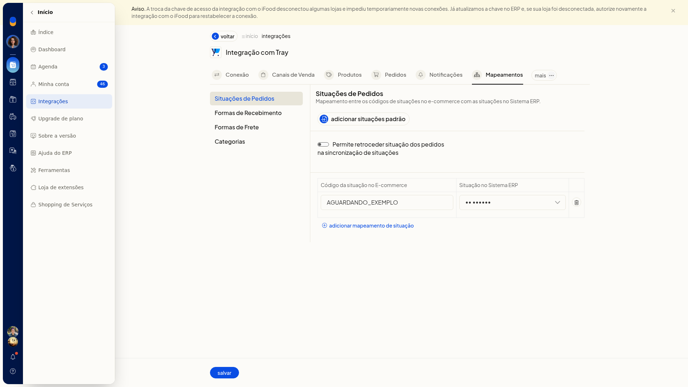
-
Clique em Salvar para gravar o vínculo entre o código da situação no ecommerce e a situação no ERP.
Mapear formas de recebimento
-
Na integração Tray, clique em Mapeamentos > Formas de Recebimento.
-
Marque Importar forma de recebimento nos pedidos para trazer a forma de recebimento nos pedidos.
-
Em Forma de recebimento padrão, selecione a forma já cadastrada ou Não definida.
-
Em Categoria financeira padrão dos pedidos, selecione a categoria financeira.
-
Na linha de mapeamento, selecione a Forma de recebimento, o meio Banco ou Gateway e o banco ou gateway já cadastrado.
-
Informe o código na integração. Clique em adicionar forma de recebimento para incluir outra linha.
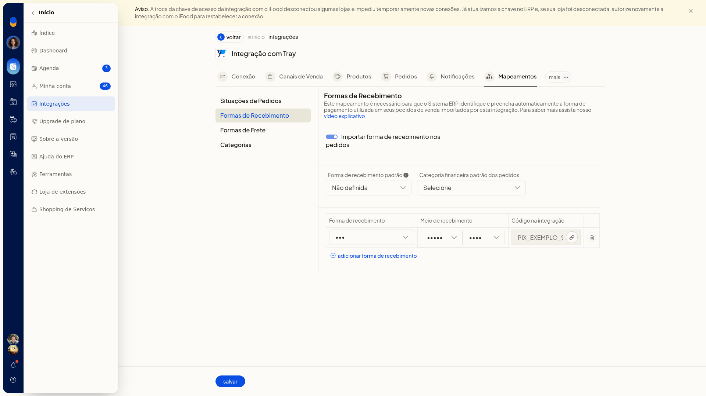
-
Clique em Salvar para gravar a forma padrão, a categoria financeira e os códigos da integração.
Mapear formas de frete
-
Na integração Tray, clique em Mapeamentos > Formas de Frete.
-
Em cada linha, selecione a Forma de envio, a Forma de frete e informe o Código na integração. As opções de forma de frete dependem da forma de envio da linha.
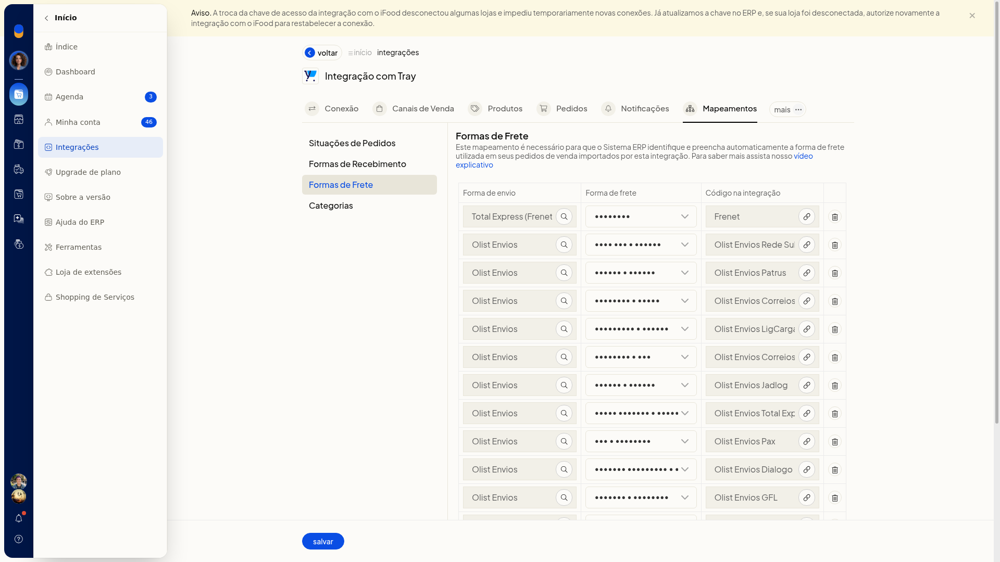
-
Clique em adicionar para incluir outra linha e informe o código na integração.
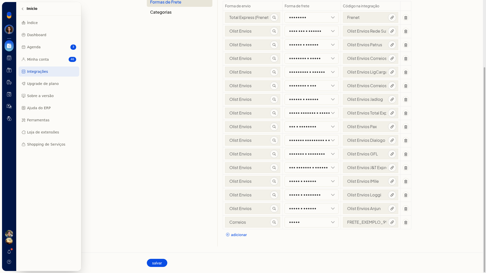
-
Clique em Salvar para gravar o vínculo entre forma de envio, forma de frete e código.
Mapear categorias
-
Na integração Tray, clique em Mapeamentos > Categorias.
-
Na linha da categoria do ERP, informe o Código da categoria no E-commerce.
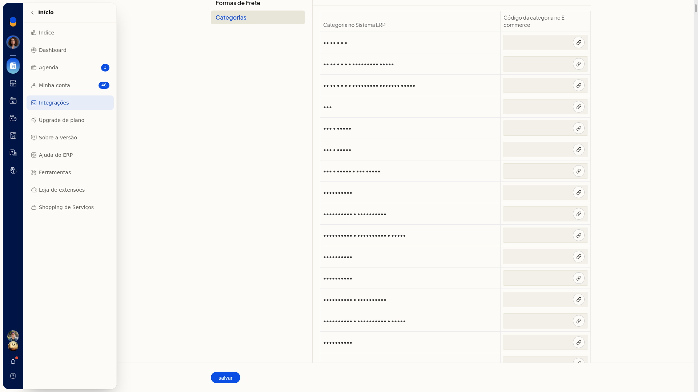
-
Para trazer as categorias a partir do ecommerce, clique em importar categorias do e-commerce.
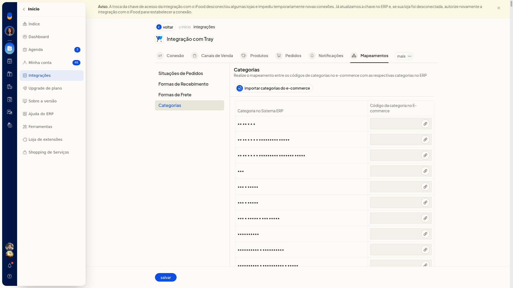
-
Clique em Salvar para gravar os códigos informados nas categorias.
Configurar status e etiqueta
-
Na integração Tray, clique em mais e em Outros.
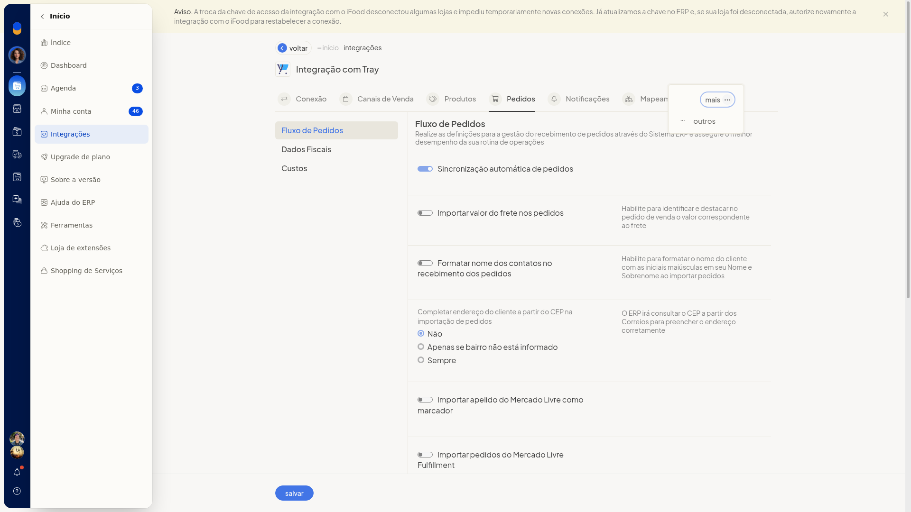
-
Em Configurações Adicionais, selecione ID do status para envio do código de rastreio, ID do status para marcar pedido como entregue e ID do status para envio dos dados da NFe. Use os IDs solicitados à Tray.
-
Em Tipo da impressão de etiqueta, selecione PDF ou ZPL.
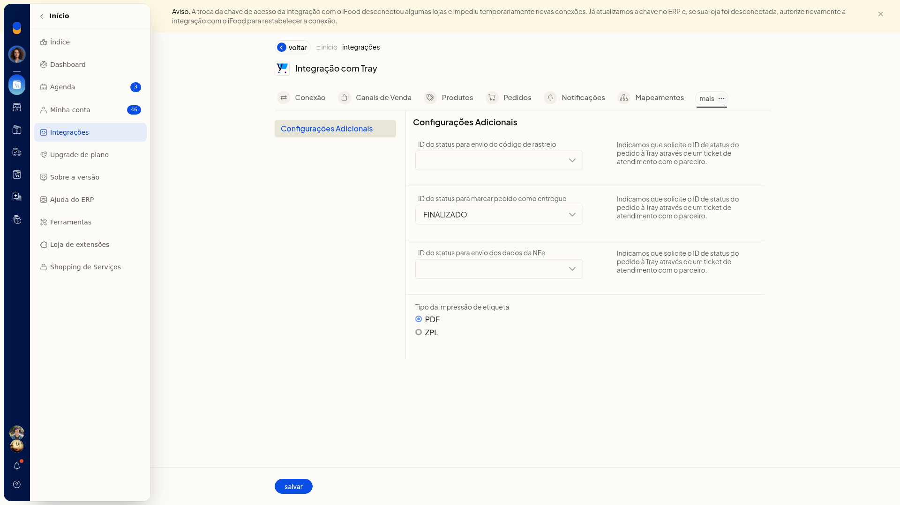
-
Clique em Salvar para gravar os status da Tray e o formato da etiqueta.